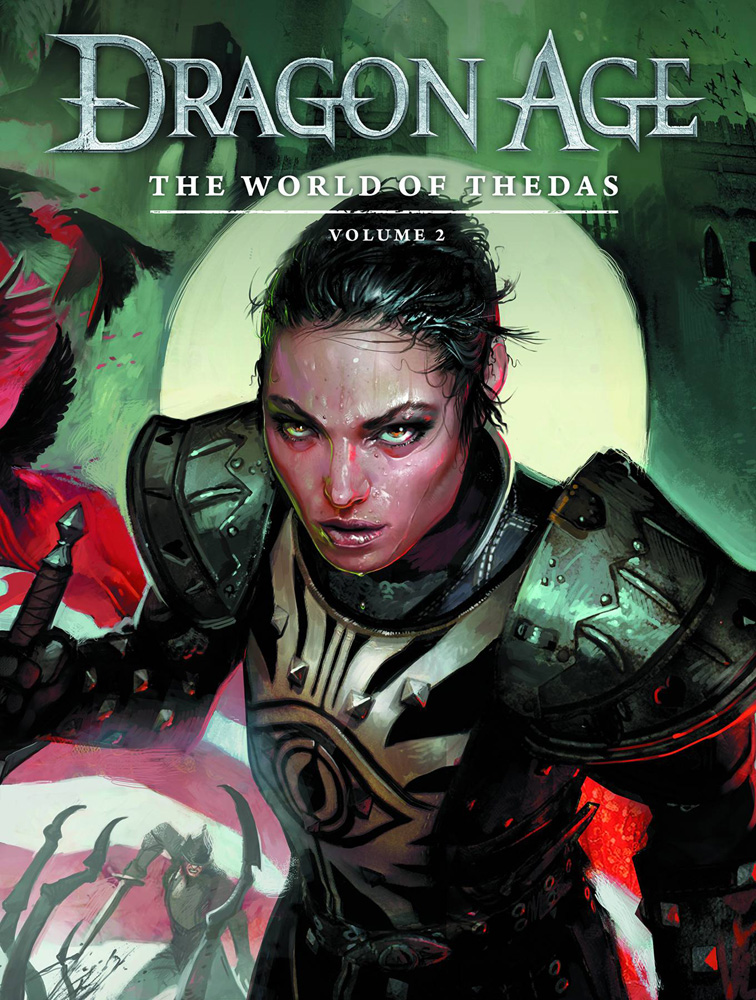
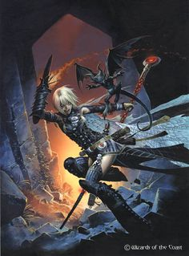

Secret Wizard’s
AMATEUR NIGHT
A GUIDE TO VARIANT MULTICLASSING
INDEX
Introduction
Core Classes
BARBARIAN
BARD
CLERIC
DRUID
FIGHTER
MONK
PALADIN
RANGER
ROGUE
SORCERER
WIZARD
Base Classes
ALCHEMIST
CAVALIER
GUNSLINGER
INQUISITOR
MAGUS
ORACLE
SUMMONER
WITCH
Introduction
In Pathfinder, multiclassing has seldom been an optimal strategy. It is still common for classes to receive features that are dependant on class progression to maintain their value as characters advance to higher levels.
While multiclassing is usually a bad decision if you are planning to play past 6th level, there are, of course, exceptions - a small dip in Master of Many Styles Monk can grant no-strings-attached bonus Style Feats and the possibility to fuse two Styles simultaneously; dips into Oracle grants access to very powerful Revelations, particularly Charisma-to-AC and qualification for Divine Protection; 2 levels into Order of the Cockatrice Cavalier for standard action Dazzling Display… The pattern is clear - dips can work because they don’t delay your main class progression too much; but they need to grant you something of exceptional value that you could not otherwise obtain.
Some feats were created to alleviate the progression hindrance inflicted by multiclassing - Monastic Legacy; Channeling Scourge; Shaping Focus. While these created new build possibilities, it still meant you’d lose some progression on your main class when you dipped out of it to qualify for those feats.
Pathfinder Unchained added a new alternative - Variant Multiclassing.
The gist is simple: you trade out 5 feats off your feat progression - specifically, at 3rd, 7th, 11th, 15th and 19th levels - in exchange for a set of features granted by a second class, usually at a slower progression than the normal class would have. This allows for obtaining some benefits of multiclassing without losing progression on your main class.
Optimality
The question then, for optimizers, is whether this is ever an maximizing strategy.
Luckily, the way Variant Multiclassing (henceforth, “VMC”) is set up, there is an easy formula to determine this:
Are the features granted by Variant Multiclassing overall better than having 5 more feats for my character?
As the answer to this question is dependent on the character, one cannot presume to have a universal rating for each VMC option. Plus, there are a myriad of feats out there so it’s not possible to make a truly exhaustive comparison.
However, sticking to common builds and feat-dependencies, it becomes easier to envisage who would benefit from a certain VMC.
It is with this mindset that I will proceed to evaluate them.
Grading
The grading process is simple. Each VMC will receive a rating for each feature it grants and then an overall rating. This rating will be color-coded as follows:
Blue - Usually greater power than a feat.
Green - Situationally competitive with a feat.
Orange - Usually equal or lower power than a feat. (Can be more valuable in corner cases.)
Being “equal” in power than a feat is usually suboptimal because the VMC forces you to lose control of when you would be gaining that feature. A clear example is the Gunslinger VMC - it grants Gunsmithing at 7th level, much later than when an optimized character would appreciate it. Sure, you can pick it earlier and then retrain it at 7th level… but the question still stands on why you picked the VMC in the first place.
Below each feature, its Pros and Cons will be listed.
Codes and such flavor features will only be displayed if they affect in-game mechanics, such as the Monk’s requirement of not wearing armor, but not a Paladin’s code, which is a roleplaying challenge.
Without further ado, let us proceed to the analysis.
Core Classes
BARBARIAN
Note: Depending on whether the alternate Barbarian Unchained is being used, the utility of this VMC varies, as the regular Barbarian rage is not useful to Weapon Finesse users and the Unchained one is. I am assuming Barbarian Unchained features are used.
3rd - Rage (CON + level rounds per day)
- Weapon agnostic boost to attack, damage, saves and HP for a small AC penalty and restrictions with skills. While it lasts, it equals to two Toughness, two Weapon Focus, a Weapon Specialization and an Iron Will.
- Enables picking some featlines.
- Short duration.
- Prevents casting unless a large amount of resources are spent.
- Prevents usage of some DEX/INT/CHA skills in combat.
7th - Uncanny Dodge
- Not many other ways of gaining this ability specifically.
- Must have low flat-footed AC to make this worth picking.
- Defensive Strategist as a trait can grant a Torag worshipper this benefit for a trait (although it doesn’t help with feints and other flat-feet incurring events).
11th - Rage Power (½ level to qualify, full progression)
- Can pick up Stance Powers with effects that outmatch most feats.
- Extremely versatile. (Gets better as new content is released.)
15th - DR 3/-.
- Too little to matter at this level.
- Doesn’t stack with other sources of DR.
- Some characters will have a source of DR by this level.
19th - Greater Rage
- Makes a good thing better.
Possible Beneficiaries: Non-caster martials who want damage/accuracy and have feats to spare. No in-built DR might make DR 3/- usable. High dodge AC to make Uncanny Dodge mean something.
- Pit Fighter Prestige Class Users. If I can make a Prestige Class work with a VMC, I sure as hell will. In this case… it works extremely well! Roar of the Crowd + Showmanship can let you rage for as long as you can pass the performance combat checks, so the short duration on Rage isn’t that big of a deal. Strength Stance can boost the CMB on Dirty Tricks. Bad part is that you can’t get Dirty Trick Master until level 13th without retraining.
- Scout archetype Unchained Rogues. Their weakness is their low attack rating, and Rage and that Rage Power (taking Accurate Stance) can be used to improve accuracy in a notable way (+5 attack at 12th level while raging). Regaining Uncanny Dodge can also be of use.
- STR-based Investigators. A similar situation to Rogues, except these would want extra damage through Powerful or Elemental Stance. It would be arguable, though, whether Studied Combat should be a thing while Raging, as it may fall into “abilities that require patience or concentration”. Being unable to use Knowledge skills is also meh. Weapon Finesse Investigators may not be too hot with the idea of giving up their early feats either.
- Weapon Finesse Fighters. With enough feats to secure Dex-to-damage by level 2, Finesse-using Fighters may appreciate Uncanny Dodge (due to lower flat-footed AC than their armored counterparts) and the bonuses granted by Rage, particularly the Will bonus. This allows them to increase their Will saves by having higher CON (to rage more), instead of investing in higher WIS.
- Monks (Unchained or otherwise). They usually have low flat-footed AC and not too many ways to gain extra accuracy, so this VMC can be useful… however, they do want all of their feats to invest in Style Feats and such, so it must be analyzed in a case by case basis. Considering they can pick up Pummeling Style at 1st level and Pummeling Charge at 8th, though, they might be able to pull this off if they go with a Strength build.
- Brawlers. They stand to gain from every feature here, too bad there aren’t that many Martial Flexibility tricks to do with Rage.
BARD
3rd - Bardic Knowledge (full progression)
- From 6th level on, larger bonus to Knowledge skills than Breadth of Experience.
- Allows untrained Knowledge checks.
- Replaces 3rd level feat for a convenience thing when most builds are looking for must haves at this level.
7th - Bardic Performance (CHA + level rounds per day, -4 level)
- Versatile.
- Can grant a notable boost to whole party’s combat prowess.
- Allows to pick a certain number of featlines.
- Doesn’t stack with other morale bonuses, they probably scale better than this ability so it won’t function well in many groups. (Investment in items like Suzerain Scepter can bring this feature to a more respectable bonus.)
- Short duration (can be ameliorated with Lingering Performance and such).
- Cannot be used as a Swift Action until level 17th.
11th - Versatile Performance
- Allows to be economic with skill ranks.
- Comes in really late.
15th - Lore Master (stuck at 5th)
- Adds certainty to some checks.
- No scaling.
19th - Additional Performances
- Same as Bardic Performance.
- Comes too late to be able to pick Dirge of Doom feats to frighten/panic enemies with it, without retraining.
Possible Beneficiaries: A build with many Knowledges as class skills, good Charisma, willing to tie its move actions to starting a performance, possibly with a companion to benefit from them.
- Daring Champion archetype Cavaliers going into the Battle Herald Prestige Class. Usually, going into Battle Herald meant giving up a Bard’s caster progression. With this VMC, a Cavalier can qualify for Battle Herald at 8th level! Whether this is worth it is subject of another discussion. Probably better for Humans since they can pick up Weapon Focus and Slashing Grace at first level.
- Summoners. Not all Summoners will want to play an entirely support role, but those who do might benefit from this VMC. Bardic Knowledge can compensate for their lower skill ranks per level, if they keep everything trained, but the fact that all Knowledges are class skills for these guys comes really handy.
- Sleuth archetype (or otherwise) Investigators. Good Charisma and a ton of skills means they can give Bardic Knowledge/Lore Master good use. Considering Investigators only need Medium Armor Proficiency, Power Attack and Great Fortitude as core feats (or otherwise Weapon Finesse and some dex-to-damage feat; or a dip in Inspired Blade), they might see this as an advantageous trade. No need to pick Eidetic Recollection as an Investigator Talent either.
CLERIC
Notes: Some rule murkiness is here. Do the Travel or Protection domains grant their non-power bonuses? Can Inquisitions be chosen? For the sake of simplification, it is assumed that: (a) the Travel and Protection domains don’t grant their non-power bonuses; even if it means Protection doesn’t function; and (b) no, Inquisitions cannot be selected since they don’t spread their powers evenly in two powers as the VMC wants to distribute them.
1st - Spontaneous Casting
- Makes prepared casting more versatile.
- Most classes who could use this already have it naturally.
1st - Restriction from Casting Spells of Opposite Alignments
- Could hamper a build, but usually not a problem.
3rd - 1st Domain Power
- Extremely versatile. (Gets better as new content is released.)
7th - Channel (-6 progression, 1 + Charisma times a day)
- Grants qualification for the Guided Hand feat and some other tricks (Crusader’s Flurry, namely).
- Very low healing for the level.
- Very few uses.
11th - Channel (-4 progression)
15th - 2nd Domain Power
19th - Channel (-2 progression)
- Not worth such a high level feat.
Possible Beneficiaries: High Wisdom users who want to go for Guided Hand might find this interesting, but they MUST have some extra combat feats to be able to obtain Guided Hand by level 9th -- retraining might also be an option. Prepared casters with no spontaneous casting may appreciate it, but there’s not that many. Mostly for healers. Crusader’s Flurry haxxers as well.
- Lamashtu-worshipping Orc Monks. Crusader’s Flurry at level 9th to flurry with a Falchion, GG.
- Nature Fang archetype Druids. Spontaneously cast Cure spells, Slayer Talents to pick extra feats to make up for those lost in the process, qualification for Guided Hand, ability to pick up something like the War (Tactics) Domain and combine it with Nature Bond with Wolf Domain… could make this work. Might be hard to make it past the first 9 levels, a bit of a late bloomer.
- Healer Witch who doesn’t want to give up Hexes. This actually stands as a good option here -- instead of taking the Hex Channeler + the Hedge Witch archetypes, a Witch could use this VMC for spontaneous casting of Cure spells, pick up the Healing (Restoration) Domain for Empowered Cures at level 15th, and a good amount of Channeling. Of course, this Witch would need good Wisdom, Intelligence and Charisma to make the most of these features, so she might end up lacking in the physical stats after all is said and done.
- High-Charisma Crossbow Rangers. Ok, you’ll likely be strapped for feats, but if you want a gimmicky build, you could channel negative energy and get Channel Smite to add some more punch to your bolts... Hell, you could go with Guided Hand with the right deity to use Wisdom for your accuracy.
- Paladins going into the Holy Vindicator Prestige Class. Channel energy progression from Holy Vindicator PrC is also applied to VMC ability. Also, domain ability is sweet.
DRUID
1st - Code (No metal!)
- Hard to build around for martial classes.
3rd - Wild Empathy
7th - Companion (-4 progression)
- Helps flanking.
- Low progression.
- Animal Ally featline goes online faster.
11th - Improved Companion (full progression)
- Boon Companion 2 levels later than you’d have otherwise gotten it if left to your own devices.
15th - Wild Shape (2/day, stuck at 4th level)
- Very versatile.
- Fair duration (hours = character level).
- Grants qualification for Aspect of the Beast, for whatever that’s worth.
- Comes in extremely late.
- Cannot talk or cast while in this state.
19th - Greater Wild Shape (3/day, stuck at 6th level)
- Very versatile.
- Can net you Pounce!
Possible Beneficiaries: One possible beneficiary I could come up with are classes that want to flank a lot, they could get a high mobility, high AC companion to secure that… and combine it with lots of natural attacks that you can still use while Wild Shaped later on.
The other type of character who’d benefit from this would be a caster that doesn’t have any way to easily fly and wants to zip around the battlefield as a bird.
- Thundercaller archetype Bard. Sky-high Diplomacy to talk the pants off any bears he finds in the forest, for one. Companion can provide an extra recipient for buffs and rage, Wild Shape can allow the Bard to turn into a bird and rain lightning on his foes from the air at higher levels.
- Natural Attack-based Skald. If you can possibly perform something as an Octopus, you could build a pretty fair natural attack based build getting some extra ones through Rage Powers. Your companion gives you someone to benefit from your performances as well.
FIGHTER
3rd - Bravery (-1 progression)
- Doesn’t outmatch a bonus that could be granted by a trait until 15th level, and even then it’s very situational.
7th - Armor Training I
- Many classes receive Medium Armor Proficiency but have their speeds hampered by it, not with this!
- Reduces ACP and increases Max Dex.
- Weird Dexterity breakpoints to make this useful.
- Easily replicated effect for just a few gold to get mithral armor.
11th - Weapon Training I
- Streets ahead of Weapon Focus, no doubt.
- BOOSTED BY GLOVES OF DUELING!!!!!!!!!!!!!!!!!!!!!!!!!!
15th - Armor Training II
- Similar to Armor Training I, but Dexterity breakpoints are weirder.
- Full movement in heavy armor is cool but by this point movement comes in many forms other than land speed.
19th - Weapon Training II
- Same as Weapon Training I.
Possible Beneficiaries: Medium/Heavy armor users with the ability to put extra points into Dexterity.
- Rangers / Slayers. While they probably don’t want to use Heavy Armor due to Combat Style Feats, they’d love the Gloves of Dueling combo. The ability to get Max Dex, less ACP and full movement in medium armor is pretty handy for these as well. Plus, since they have low Will saves, Bravery is not a total waste.
- Unmounted Cavaliers / Samurai. While mounted warriors need every feat they can get their grubby hands on, unmounted ones have more room for leeway and might have more use for this VMC.
- Paladins without Aura of Courage / Antipaladins. Paladins with Aura of Courage will find Bravery extremely needless. Otherwise, these guys can enjoy the benefits of this VMC if they don’t need too many feats for their builds.
- Arcane Duelist archetype Bards. The armor training bonuses match up well with the levels in which the Bard gains their new armor proficiencies, so that’s pretty sweet. The bonus accuracy granted by Gloves of Dueling is also very useful for them.
- Melee-focused (or switch-hitter) Myrmidarch archetype Magus. If you plan to build your Myrmidarch upon ranged attacks, then you probably want to use all your feats on that. But if you want to be mostly melee with some switch-hitting, then this might be a good choice. A recently released FAQ says Armor Training and Weapon Training gained from Myrmidarch stacks with the Fighter’s, so these could be stacked for great effect.
- Sohei archetype Monks. Same logic as above. Armor Training isn’t wasted since they do get to flurry with armor. If using Elven Chain, you can even benefit from the ACP reduction and high DEX builds will always enjoy the extra Max Dex.
- Mindblade archetype Magus / Psychic Investigator archetype Investigators. Both archetypes have three things in common - they need to protect themselves against fear effects to ensure psychic casting, they are free to pick up Medium Armor Proficiency, and usually have enough feats to spend on a VMC.
MONK
Note: It is assumed, for the purpose of the Ki Pool feature, that this is an Unchained Monk.
1st - No Armor Restriction
- Now this makes it really hard to use the VMC…
3rd - Unarmed Strike (-2 progression)
- Much, much better than picking the Improved Unarmed Strike or the Monastic Legacy feats!
- Allows to qualify for a true myriad of featlines, including Strike feats, Style feats, etc.
- If your focus was Unarmed Strikes, you probably wanted this at 1st level.
- Most unarmed martial classes get this for free already.
7th - Evasion
- This is worth 25,000gp as an item, so probably worth the feat.
- Most classes that have high Reflex saves already have this.
11th - Ki Pool (-2 progression, Ki limited to ½ level)
- Easy DR bypassing in-built on the feature.
- No flurry of blows means there’s nothing in-built on the feature to use the ki for.
- Requires being Lawful to benefit from aligned Ki Strikes.
15th - AC Bonus (+3 dodge)
- Beats the hell out of the Dodge feat.
19th - Improved Evasion
Possible Beneficiaries: Someone who can get high AC while unarmored, doesn’t already have Improved Unarmed Strike as a bonus feat, possibly lawful, high Reflex saves.
- Ninja. Unsurprisingly, Ninja are particularly well benefited by this VMC. Unarmed Strike with a progression is a pretty good utility for this class, and Evasion / Improved Evasion are worth 2 Master Tricks. Ki Pool stacks with the Ninja’s own to boot.
- Strangler archetype Brawlers. Until the errata comes that says this guys don’t lose the Improved Unarmed Strike feat, these guys will benefit massively from this VMC. High Reflex saves, they grapple so they use Unarmed Strike a lot, high AC while unarmored… could work.
- Savage Barbarian + Savage Technologist archetype Barbarian. Ok, bare with me on bare-naked Barbarians. This guy specifically has a Rage that boosts their dexterity massively, so using armor will affect their maximum Dexterity eventually. They want to use Two-Weapon Fighting with a gun and a melee weapon, but they want to keep a hand free to reload their guns as well. They gain a ton of AC bonuses while unarmored too… Crazy enough to work! But you can’t be Lawful.
- Brawler archetype Fighters. With a toolset ready to exploit unarmed attacks and maneuvers, the VMC can grant extra defence at the cost of AC.
- Spell Dancer archetype Magus. Lots of bonuses to unarmored AC make this a pretty interesting choice.
- Kensai archetype Magus? If allowed to pick Weapon Focus with Unarmed Strikes… then it might be a good option as well. Low crit-rate hurts.
- Unarmed Oracles. Anyone who wants to make a build based around Unarmed Strike AND has the ability to gain a high armor bonus to AC while absolutely naked (such as Oracles with their armor revelations or Investigators with extracts of Mage Armor) could possibly use this VMC. This also allows them to qualify for Revelation Strike with hard hitting punches.
PALADIN
3rd - Detect Evil
7th - Lay on Hands (-4 progression, pool limited to ½ level)
- Can give access to some swift action healing
- Limited pool, low progression.
11th - Smite Evil (-4 progression, 1/day)
- Lots of free power when it matters.
- Very limited in terms of daily uses.
- Delayed progression.
15th - Mercy (3rd level)
- Can only cure weak effects.
- By this level, these effects are trivial.
19th - Divine Bond (-3 progression)
- The good stuff, a bit late.
Possible Beneficiaries: This is a flavor VMC, with only one potential beneficiary in terms of optimization that I can think of.
- Monks going into the Champion of Irori Prestige Class. Instead of having to dip Paladin, lose a level of Monk, and qualify for this PrC at 6th level, a Monk with VMC Paladin can qualify for the Champion of Irori PrC at 12th level in exchange for some feats - for whatever that is worth. This has several interesting things going on for it - the ability to spend points from your Ki Pool to get extra uses of Smite Evil/Smite Chaos, namely. Not sure how Champion of Irori levels stack with the -4 progression on Smite Evil/Chaos though. This is still a STR/DEX/CON/WIS/CHA dependant build and probably left for high point-buy games or that one time you roll straight 18s, but that’s always been the case for Champions of Irori.
RANGER
3rd - Track (full progression)
7th - 1st Favored Enemy
- Better than any feat out there to specialize against a certain type of enemy, in terms of skills and attack/damage rolls.
- Could be applied to any enemy with Instant Enemy wands and such.
- Situational.
11th - 1st Favored Terrain
15th - Expert Tracker
- Woodland Stride is probably a non-issue at this level.
- Swift Tracker is extremely situational.
19th - Quarry
- Dat critical confirmation tho.
- Situational.
Possible Beneficiaries: This is the flavor VMC if there’s ever been one. Unless you have in-roads with the DM and know that you’ll be spending a lot of time fighting the same kind of enemy over the same terrain, then from an optimization standpoint this is not likely to be a good decision. If you do know that this is meant to be a specialist-friendly campaign, then you can dumpster dive for some interesting feats like Planar Hunter.
ROGUE
3rd - Trapfinding (full progression)
- If you are in the kind of campaign where this comes useful, it’s heavensent.
- It is rare to have Disable Device as a class skill to make best usage of this.
- Lenient GM’s may allow this trait, which grants the big bonuses of this ability.
7th - Sneak Attack (+1d6 at 7th and every four levels thereafter)
- +3.5 extra damage on average when you use it.
- It is, after all, Sneak Attack damage and requires some trickery to function.
11th - Evasion
- As noted on the Monk VMC, a feat for a 25k gp item.
- Not as good as the Monk, since it comes much later when 25k isn’t that big of an investment.
15th - Uncanny Dodge
- Benefit is harder to come by.
- Need good Dex to make it worth it.
- A bit situational.
19th - Improved Uncanny Dodge
- Benefit is harder to come by.
- A tank build would have probably appreciated this earlier.
- Most enemies at this level are not going to miss you by 2, if they can miss you at all.
Possible Beneficiaries: Anyone with a surefire method of catching an enemy flat-footed will receive a big bang for the buck with this VMC. Several defensive features along with a +3.5 damage boost is probably going to be a good deal.
- Sanctified Slayer archetype Inquisitors. Here’s a fun build - using the War Domain, a Sanctified Slayer Inquisitor with VMC Rogue can qualify for Dastardly Finish at 11th level. With the War Domain power, he can gain the feat as a swift action without having to wait for 13th level. Inquisitors have access to Castigate and Greater Stunning Barrier, which make enemies cower and stunned, respectively, and Studied Target to increase the DC of their spells to make sure they hit. This allows this build to coup-de-grace an enemy right away! What’s more: after getting Dastardly Finish as a feat (at 13th level, presumably), you also qualify for Merciless Butchery, since you do have the Studied Target feature. As a final cool thing: between Stalwart and Evasion, you can evade any lesser effect if you pass the save.
- Brawlers. High reflex saves but no evasion, low flat-footed AC but no Uncanny Dodge… if you are using a build that is not too feat-dependent, then this might be interesting. Sneak Attack + Martial Flexibility can offer new alternatives.
- Vivisectionist archetype Alchemists. Be the Rogue 2.0. Uncertain how Sneak Attacks stack in this case due to the weird wording on the Vivisectionist.
SORCERER
Note: It is assumed that this does not grant the Sorcerer Arcana.
3rd - 1st Bloodline Power
7th - 2nd Bloodline Power
11th - Bonus Feat
15th - 3rd Bloodline Power
19th - 4th Bloodline Power
SPECIAL SECTION
WHEN IS IT BETTER TO PICK THE SORCERER VMC OVER ELDRITCH HERITAGE FEATS?
If the answer to any of the following questions is “yes”, you might be better off with the Eldritch Heritage featline.
- Do you want a specific Bloodline Power, and not all of them? For example, a Rogue may want to get the Shadow Bloodline’s 9th level power to get Hide in Plain Sight. In that case, they can devote three feats (Skill Focus [Stealth], Eldritch Heritage, Improved Eldritch Heritage) to get the 9th level power, rather than 5 feats.
- Is effective Sorcerer level not important for you? Again, in the example above, effective Sorcerer level doesn’t matter too much for the Rogue, as Hide in Plain Sight is his main goal. The ability to use shadow walk more often might be tempting, but he’d rather save the feats.
- Do you have high Charisma? It is assumed that the Rogue we mentioned before has, at the very least, 15 Charisma to qualify for Improved Eldritch Heritage… or 13 Charisma and a Headband of Alluring Charisma +2. If that Rogue’s Charisma is instead 12 or lower, then it might be easier to just use the Sorcerer VMC.
- Do you want the 9th or 15th level Bloodline Power faster? Here’s another question… Improved and Greater Eldritch Heritage are eligible feats at 11th and 17th levels respectively. If the Rogue went with the Sorcerer VMC, he wouldn’t get Hide in Plain Sight until level 15th; with Improved Eldritch Heritage, he can get the feat at level 11th. So this is another matter for consideration.
Possible Beneficiaries: Considering the wide, wide range of Bloodlines and their different powers, it is safe to say that anyone with extra feats in their build could get something of use from this VMC. Below, a couple of cool combos and stuff.
- Melee characters with Light Sensitivity + Orc Bloodline. Orc Bloodline can remove your Light Sensitivity, grant you massive bonuses to Strength, and you can benefit for longer with Touch of Rage with something like the Community Minded trait.
- Touch attack based casters + Aberrant Bloodline. Bad Touch Clerics will love the ability to deliver their spells at larger ranges! The other features of the Bloodline are pretty alright as well.
- Metamagic using spontaneous casters + Arcane Bloodline. Arcane Bond for more spells per day, Metamagic Adept to reduce casting time, extra sorcerer/wizard spells, super Spell Focus… Nothing to scoff at!
- Non-Sorcerers going into Dragon Disciple Prestige Class + Draconic Bloodline. The goal here is triggering the extra ability bonuses that the PrC grants if you already have the Bloodline!
- High Charisma martial classes + Ghoul Bloodline. Hard-hitting, paralyzing claws; bonus natural armor and resistances; FREE HASTE; Zerg burrowing skills… Could be a fun addition.
- Crafters + Impossible Bloodline. Craft Wondrous Item as a bonus feat with the ability to ignore spell prerequisites is extra super nice; might not be totally awesome to give up so many feats for defensive measures like Disorienting Touch or Distracting Pattern, but if it works for you then why not.
- Life Oracle or Merciful Healer archetype Cleric + Martyred Bloodline. If you want to healbot hard, this could be a good option.
- Underhanded Sap Master Rogues + Shadow Bloodline. As mentioned, not only you get Hide in Plain Sight 2.0, you also get a secret nonlethal touch attack that qualifies for Underhanded in most cases (who knows that the Rogue will sap them with magical energy?), and Darkvision.
- Martials with good Constitution and Charisma + Nanite Bloodline. Lots of weird and interesting effects here.
WIZARD
3rd - Familiar (full progression)
- Free feat-like bonus to start with (+2 to a save, +4 to initiative, etc.).
- All the benefits of a familiar.
- Thanks to familiar archetypes, this is a very versatile feature - you can get a Knowledge skillbot with a Sage Familiar; a flank buddy with a Mauler familiar, and so on.
7th - 1st Level School Powers
- Very versatile. (Gets better as new content is released.)
- Scales with level.
11th - Cantrip
15th - Discovery
- Very exploitable and versatile.
19th - 8th Level School Power
Possible Beneficiaries: Many out there can enjoy this VMC due to its versatility, but those with higher Intelligence will probably be able to make the most of it.
- Any blaster casters + Admixture School. Everyone loves Admixture. This is a pretty great combo. Sorcerers will appreciate it, although the lost feats might be a problem.
- Sandman archetype Bards + Phantasm School. Better illusion spells, possibility to take Resilient Illusions as an Arcane Discovery… OH, YEAH, AND DID I MENTION YOU CAN SIMPLY ACTIVATE AN AURA TO MAKE EVERYONE WITHIN 30FT. AUTOMATICALLY FLANKED?!?! Pretty great for an archetype that not only has Sneak Attack but also a DC bonus to spells (which might be illusions!) against flanked enemies. Of course, that only matters at 19th level, but it’s a pretty sweet capstone.
- Scout archetype Rogues + Shapechange School. Free enhancement bonuses, free natural weapons when you need them, you can use Beast Shape III to gain pounce at the end game and several natural attacks, a familiar for a flanking buddy, a skill bot or a scout, a free cantrip (you could get detect magic and start identifying items for the party!)... lots of good stuff.
- Bounty Hunter archetype Slayers OR Lore Warden archetype Fighters + Foresight School. Both of these types of characters have something in common - they want good Intelligence and they are focused on combat maneuvers… Foresight School grants several interesting abilities to any martial (I really like Prescience to store good rolls when I know I’m going to do a maneuver next round), but the real cake here is the Arcane Discovery at 15th level, which grants access to Knowledge is Power.
- JJBA fans playing a Slayer. ZA WORUDO! Gimmick build: get Time Stutter as your Arcane Discovery at level 15th, use time stop to study an enemy for as many rounds necessary, and then use your Assassinate ability before they even know what hit them. Foresight School is cool here.
Base Classes
ALCHEMIST
3rd - Alchemy (full progression)
- Nice skill bonus, beats out any other boost you could find to Craft (alchemy).
- Not many characters would necessarily benefit from this.
7th - Bombs (full progression)
- Alright damage at full progression.
- No Intelligence-to-damage.
- Reduced attempts.
11th - Mutagen (full progression)
- Badass boost to physical power.
- Long ass duration.
- For most strength-based martials, a penalty to INT means little.
- A constitution mutagen could help a caster boost Fort saves and HP.
- For most martial classes, the rest of the VMC features will be wasted.
- For dexterity-based martials, a penalty to WIS could be problematic.
15th - Swift Poisoning
- Optimized poisoning to kill low Fortitude enemies.
- You won’t likely fight many low Fortitude enemies at this level.
19th - Poison Immunity
- Immunities are cool.
- Most poisons are trivial to remove at this level.
Possible Beneficiaries: An Intelligence-based class would be ideal for more Bombs, with some use for Mutagen and the ability to poison enemies.
- Underground Chemist archetype Goblin Rogue. This is a thing of beauty. With Burn! Burn! Burn! you can deal more damage with your Bombs, the Bomber rogue talent for more Bombs per day, the Bomber’s Discovery rogue talent to improve them, and through class features, you get Intelligence-to-damage with splash weapons, Sneak Attack on splash attacks, another stacking bonus to Craft (alchemy), you can use Mutagen for more Dexterity to hit better with your ranged attacks, and poisons are very thematic.
CAVALIER
3rd - Challenge (-2 progression, 1/day)
- Good boost to damage when needed.
- If you really want to add cheese on that, Chain Challenge lets you keep making new Challenges one for Charisma/times a day.
- Champion’s Banner can increase this damage cheapish (though no extra uses).
- Otherwise limited in usage.
- Comes with an AC penalty against other targets.
- Only +1 damage when you get it, which is super lackluster.
7th - 1st Order Ability (full progression)
- Very versatile. (Gets better as new content is released.)
- Most powers are stronger than feats, or include a bonus feat even.
11th - Tactician (full progression)
- Comes with a bonus Teamwork feat!
- All the bad things about Tactician.
15th - 2nd Order Ability (full progression)
19th - Greater Tactician (full progression)
- Swift action activation is real nice.
- Yey another bonus Teamwork feat.
- No Master Tactician to share ANY teamwork feat makes me sad.
Possible Beneficiaries: Honestly, all the bonus feats this VMC can include - bonus Teamwork feats embedded on Tactician/Greater Tactician and usually in Order Abilities - can make this into a great option for many characters. Challenge is not even that bad. Having good Charisma is usually advisable for some Order Abilities but it’s not always the case. Fun facts: Order of the Green can give you better Favored Terrain bonuses than the Ranger VMC.
- Exemplar archetype Brawlers going into the Battle Herald Prestige Class. Qualify for the PrC right at 5th level! Not too shabby.
- Aldori Swordlord archetype Fighters going into the Aldori Swordlord Prestige Class + Order of the Cockatrice. Unlike the previous beneficiary, this is not so much a trick to qualify as it is a straight power up. Here’s the benefits you can get - (a) Order Ability grants you Dazzling Display as a bonus feat and allows you to use it a standard action rather than a full-round action, granting you more mobility, plus +2 extra accuracy against demoralized enemies, so that’s awesome; (b) you can Tactician for Outflank, using your probably high-ass Dexterity to make use of those sweet extra Combat Reflexes attacks of opportunity; and (c) did someone say Combat Reflexes? ‘Cause Steal Glory, the 2nd Order Ability, works real well with that. And all this without losing a single Fighter level so you progress with your skills perfectly. You can probably retrain the Dazzling Display feat you picked to qualify for the PrC once you get it through the VMC at 7th level.
- Aid Another build + Order of the Dragon. Order of the Dragon grants a nice boost to Aid Another, so, for example, a Halfling Investigator with the Effortless Aid talent and the Helpful trait can use a move or swift action to deliver a full power aid another with an enlarged bonus.
- Sap Master Ninjas + Order of the Hammer. So instead of having to spend a Ninja Trick and a Master Trick to get Monk-like unarmed strikes, you can get full Monk progression for nonlethal damage at 7th level. Plus you get to share Teamwork feats -- I hear Outflank is godly for Ninjas. Build may be short on feats to spare though.
- Grapple builds + Order of the Penitent. Imagine someone with the grapple CMB of a Tetori Monk or a Strangler Brawler and the ability to automatically tie up enemies… that’s buckwild. Real fucking buckwild.
- Non-Cavalier mounted builds + Order of the Sword. Mounted Mastery is just that awesome of a power. It’s a bit late but it’s probably worth it. Plus, your bonus Teamwork feats can be shared with your mount with a Horsemaster’s Saddle.
- Intimidation builds with some Critical feats + Order of Vengeance. Harsher penalties to demoralized opponents and sharing Critical feats with Tactician sounds like a great deal! A Brawler or someone with Martial Flexibility could really exploit this at higher levels.
GUNSLINGER
3rd - Proficiency with all firearms
- Firearm builds probably want this at 1st level.
7th - Gunsmithing
- Never going to be stronger than a feat.
11th - Amateur Gunslinger
- Never going to be stronger than a feat.
15th - 3rd level Deed
19th - 7th level Deed
Possible Beneficiaries: Cannot earnestly recommend this VMC to anyone. If only it had Dexterity-to-damage with firearms at some point, even at 11th level...
INQUISITOR
1st - Restriction from Casting Spells of Opposite Alignments
- Could hamper a build, but usually not a problem.
3rd - Stern Gaze (full progression)
- Bonus to skills is nice, I suppose.
- Doesn’t become better than a feat until 6th level.
7th - Judgement (-3 progression, 1/day)
- Versatile.
- Very limited in uses.
- Delayed progression hurts.
11th - Solo Tactics
- Numerous possible uses.
- You are already giving up many feats through this VMC, so you need to have enough bonus Teamwork feats already.
15th - Additional Judgement
- Considering Judgement lasts until combat ends, two instances of it probably do the trick for an adventuring day.
- Your Judgement is not necessarily strong enough for this to be worth it.
19th - Second Judgement
- Pretty nice.
- Comes much too late.
Possible Beneficiaries: Someone who can use Solo Tactics and the skill bonuses effectively is probably ideal, as Judgement is so varied that almost everyone can somehow stand to gain from it.
- Zen Archer Monks. These guys have a ton of extra feats to play with, and access to Solo Tactics and Judgement can help them out make something fun with them.
- Casters whose main concern is bypassing Spell Resistance. With the Piercing Judgement and Solo Tactics to exploit Allied Spellcaster, at 12th level, it is possible to be getting +6 to CL checks to avoid SR, or +8 if the allied spellcaster knows the spell you are casting, and this is just from this VMC. Of course, this is pretty darn gimmicky.
- Dead companion Hunters. Didn’t want a pet but wanted to be a Hunter? This VMC can let you benefit from all your otherwise useless Teamwork feats with Solo Tactics while giving you a fair combat bonus.
MAGUS
3rd - Arcane Pool (-2 progression)
- Very versatile.
- Progression isn’t that slow.
- Users with high Intelligence can have large pools.
- Dependance on Intelligence modifier might discourage some takers.
- Much less useful for non-combat users.
7th - Magus Arcana
- Extremely versatile and powerful. (Gets better as new content is released.)
11th - Spellstrike
- Very neat.
- Less exciting without Spell Combat.
- Limited list.
- Dead level for non-caster users.
15th - Magus Arcana
19th - Magus Arcana
Possible Beneficiaries: The sheer power and variety of Magus Arcana makes this one of the strongest VMCs out there, but the power of Arcane Pool is also of note. Higher Intelligence probably makes this VMC more appealing but it’s not a mandatory requirement. Casters with a few touch spells from the Magus spell list can get some mileage out of Spellstrike as well.
- Classes that can naturally use Spellstrike. Bloodragers with Shocking Grasp, Frigid Touch and Vampiric Touch, for example; Druids with Frigid Touch; or Antipaladins with Vampiric Touch. These classes are free to use Arcanas to empower any aspects of their class.
- Classes that can cheat spells into their lists through class features to use Spellstrike. Magician Bards with most evocation spells; Dirge Bards with Vampiric Touch; Samsarans. These classes are free to use Arcanas to empower any aspects of their class.
- Classes that use this VMC’s own features to use Spellstrike. Thanks to the Broad Study Arcana, you could use any class’ spells with Spellstrike! Otherwise, you can use the Spell Blending Arcana to gain a Magus spell to your spells known to use with Spellstrike. Bad Touch Clerics will probably want to use Broad Study; Skalds or Hunters might want Spell Blending.
- Medium or low BAB classes that want to focus on Combat Maneuvers. Always wanted to make a Wizard who was the very best at grappling? Look no further than Maneuver Mastery, my friend! Use your character level as your base attack bonus to calculate CMB for one maneuver. A particularly fun build would be combining it with Spell Trickery for a Bard to really exploit those swift action illusions and charms.
- Rogues who want Sneak Attack damage without putting any effort on it. Prescient Attack Arcana is hilariously awesome for Rogues, just spend points from your pool to always treat enemies as flat-footed. But wait! You may say Spellstrike is wasted… well, there’s two possible ways to make it not so. Major Magic Rogue Talent to get Shocking Grasp can give you some extra oomph. The other way is a wand of Weaponwand to (possibly) allow you to benefit from Spellstrike while using wands of Frigid Touch or Vampiric Touch inside your weapon (but this is possibly cheese).
- Full caster who just wants to shoot two level 9 spells on the same round because it’s cool. Quickened Magic Arcana can allow you to, once per day, cast a spell as though you had the Quickened Spell metamagic. So, for example, a high level Cleric could cast Energy Drain twice on the same round once per day. Pretty damn buckwild.
ORACLE
1st - Curse (½ progression)
- Usually, you can find a Curse that is more of a straight buff to your character if you look well enough. (Gets better as new content is released.)
- Comes with a downside always though, even if easily ignorable.
3rd - Revelation (-6 progression)
- Extremely versatile.
- Scaling bonuses.
- You can probably snatch more revelations with a Ring of Revelation.
- Very, very delayed progression.
- Effects with a DC will be very low.
- Restricted Revelation list.
7th - Cantrip
11th - +5 Curse Progression
- Not that bad really - some 10th level Curse bonuses are pretty sweet.
15th - Another Revelation
19th - Yet another Revelation.
Possible Beneficiaries: Characters with higher Charisma can probably make use of more Revelations, but that’s hardly a dealbreaker. Anyone who can make use of a Curse without suffering greatly from its penalties is sure to enjoy this.
- Wild Stalker Rangers going into the Rage Prophet Prestige Class. Wild Stalkers gain rage and a rage power to gain Moment of Clarity, and you naturally have divine spellcasting. With the Curse gained through the VMC, you qualify for the PrC at 6th level.
- Barbarians + Lame Curse. Be immune to Fatigue at 11th level! Too bad Unchained did away with rage cycling.
- Casters without good blasting spells + Blackened Curse. Burning Hands? Scorching Ray? Flaming Sphere? Wall of Fire? Yes, please! Blaster Bards/Hunters/Inquisitors rejoice! Of course, the penalty on attack rolls is a bit discouraging, so its probably best left to very dedicated builds.
- Low Fortitude classes + Wasting Curse. Big boost to Fortitude-dependent saves and several immunities is not bad at all, defensively.
- Wizards (or Sorcerers) going into Eldritch Knight Prestige Class + Battle Mystery. The Skill at Arms revelation can be picked at 3rd level to gain full proficiency with martial weapons, effectively allowing you to going to Eldritch Knight without having to lose a caster level in Fighter!
- Monks + several Mysteries. The winner here are the Revelations that grant an armor bonus. This can allow Monks to get a nice scaling armor bonus that will be competitive with Bracers of Armor until the highest levels, and even then, some of the extra things tacked into the Armor revelations are very nice. My favorite is Wind Mystery - good Armor Revelation (at 19th level, 50% miss chance to ranged attacks!), a revelation for Wings for several minutes to pick at higher levels and then some other interesting choices.
- Healers + Life Mystery. Several quality of life things here that any combat healer would appreciate.
SUMMONER
3rd - Summon Monster (-2 progression)
- Scaling up to Summon Monster VIII!
- Spell-like ability means you can’t modify it with metamagic or other effects.
- Does not grant the feature itself, so you don’t add Summon Monster to your spell trigger/completion item’s allowed list.
7th - Eidolon (-4 progression, ½ evolution pool, limited rounds/day)
- Customizable.
- Cohort that doesn’t require high Charisma.
- If you have good Charisma, you might as well have gotten Leadership.
- Limited rounds per day.
11th - Summon Monster 3/day
- More uses means more versatility.
15th - Shield Ally
- Good defensive boosts.
- Eidolon won’t always be there for you.
- Shield bonus is likely to be redundant.
19th - Aspect (1 point)
- Not worth it at this level.
Possible Beneficiaries: Cannot think of anyone who’d get much out of this VMC. It’s simply very hard to justify this over Leadership.
WITCH
3rd - Familiar
- Free feat-like bonus to start with (+2 to a save, +4 to initiative, etc.).
- All the benefits of a familiar.
- Thanks to familiar archetypes, this is a very versatile feature - you can get a Knowledge skillbot with a Sage Familiar; a flank buddy with a Mauler familiar, and so on.
7th - 1st Hex (stuck as 1st level)
- Several feat-like bonuses.
- Some bonuses are very strong even with stunted progression.
- Stunted progression.
- Very low DCs due to the above.
11th - Cantrip
15th - 2nd Hex (stuck at 1st level, 1st Hex now moves to 8th level)
- Harder to justify the trade at this level.
19th - Major Hex (stuck at 10th level)
Possible Beneficiaries: Cannot think of anyone who’d get much out of this VMC. Low DC Hexes, 11th level feat lost to Cantrip… most tricks that this VMC could pull can be done with others to better effect.